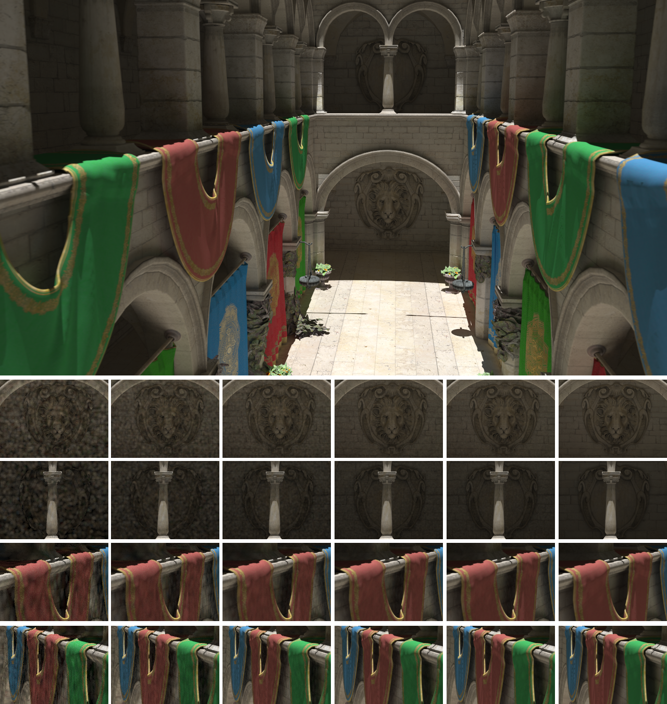

Image rendered using Opposite Renderer with slight depth-of-field. Large image: 353 000 iterations of progressive photon mapping, using 2 Nvidia GTX 480 for almost 18 hours. 1024*1024 emitted photons per iteration. Small, left to right: 10, 50, 200, 1000, 2000 and 353 500 iterations. 1000 iterations in about 1m on 6 GTX 480.
Models downloaded from Morgan McGuire's Computer Graphics Archive http://graphics.cs.williams.edu/data. Scene courtesy of Crytek.
Download this scene (as a zipped .DAE) Get images from Crytek and put all images (.tga files) in the same folder as the dae.
